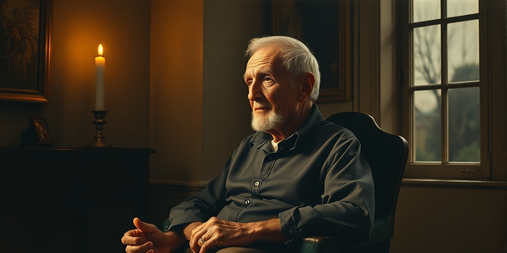
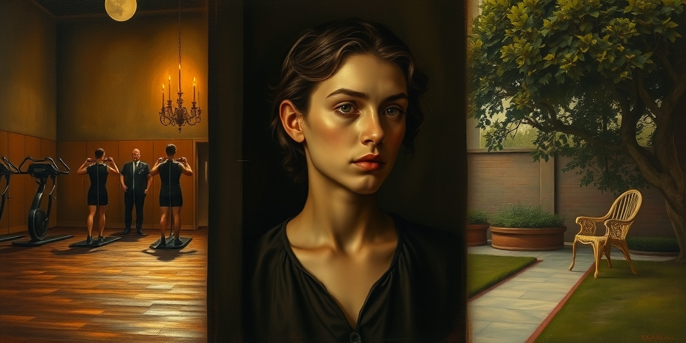

小汪老师的成长洞察 · 属于你的成长专栏
天天五点半起床跑步的人，未必比睡到自然醒的人活得久。这句话刺耳，但身体内部的生化账本从不撒谎。
见过那种人吗？每天五点起床跑步，饮食精确到克，日程排满自我提升项目。他们看起来是健康的标本。但如果你离得够近，会发现一种紧绷感。他们的自律不是从从容中长出来的，而像是在逃离什么东西。
有人用运动对冲焦虑，有人用控糖对抗失控感。这些行为表面是自我管理，底层却是持续的自我对抗。对抗消耗的能量，比运动消耗的更多。身体分不清你在为马拉松训练，还是在为明天的报告失眠。它只接收一个信号：主人正在应激。
慢性压力有一条清晰的生理通路。皮质醇，这个压力激素，短期分泌能帮你度过危机。但如果它常年处于高位，事情就变了。它会抑制免疫系统，让炎症水平升高。它会促进腹部脂肪堆积，那种最危险的脂肪。它会破坏海马体神经元，而海马体管着记忆和情绪调节。
最致命的是端粒。端粒是染色体末端的保护帽，每分裂一次就缩短一截。端粒长度直接决定了细胞还能分裂多少次。皮质醇加速端粒缩短，等于直接按下了衰老的快进键。你为别人的事失眠那一夜，端粒在变短。你反复琢磨某句话是不是得罪了人，血压在升高。这些事情累积几十年，比少跑几年步的后果严重得多。

有研究追踪百岁老人的共性。出现频率最高的词不是“运动”，是“乐观”和“低神经质”。他们很少有人告诉你“我每天五点起来跑步”。他们更常见的特点是：不管闲事、不操心别人、情绪稳定得惊人。他们的养生秘诀不是训练计划，而是一种能力——不让外界的人和事进入内心。
身体活动当然重要，但它更多是结果而非原因。一个内心平静的人自然有精力走动。一个被焦虑消耗的人连起床都费力。那些长寿的人不是没有遇到过烦心事，而是早早学会了一件事：把时间、情绪和能量，牢牢攥在自己手里。
阿德勒心理学里有个概念叫课题分离。一件事是谁的课题？如果是别人的，你不需要背负。孩子有孩子的人生，同事有同事的选择，亲戚有亲戚的烦恼。这些不是你的责任。分清楚“我的事”和“别人的事”，不是冷漠，是生存策略。
社会把“自私”钉在耻辱柱上，却把“操心”包装成美德。但身体不在乎道德叙事。它只对体内的化学信号做出反应。一个人可以是最善良、最负责的人，但如果这些品质让他长期处于高应激状态，他的细胞仍然会加速老化。课题分离不是教你损人利己，而是让你停止承担那些本不属于你的情绪债务。

这就出现了一个残酷的反讽。社会最推崇的品质——忘我奉献、严格自律——可能在生物层面加速衰老。而社会最不齿的标签——自私、不管闲事——反而在细胞层面起到了保护作用。当然，这不是让人变得冷漠。真正的智慧不在“自私”这个词的表面。
它在于一种辨别能力。什么值得操心，什么不值得。什么是你的课题，什么是别人的。什么时候该用力，什么时候该放手。那些长寿的人，不是赢在健身房，而是赢在边界感。他们用一辈子练习了一件事：不让不该进来的东西进来。
值得思考的几个问题
你每天操心的事，有多少根本不是你的课题？你为谁失眠，为谁血压升高，为谁加速了端粒的缩短？这些账，身体一笔一笔记着。它不会因为你是个好人就给你打折。下次再想为别人的事焦虑时，问自己一句：这件事，值得我用几个月的寿命去换吗？
小汪老师的成长洞察 · 属于你的成长专栏